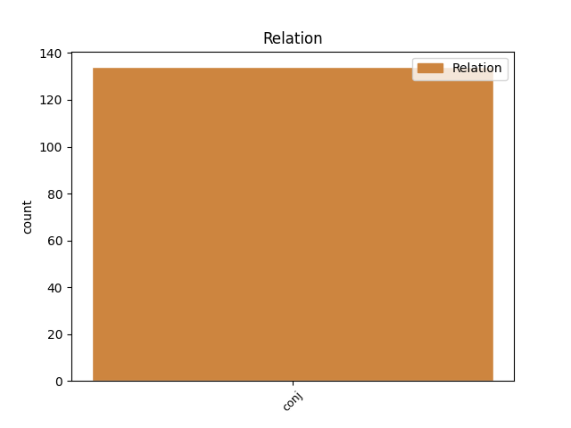
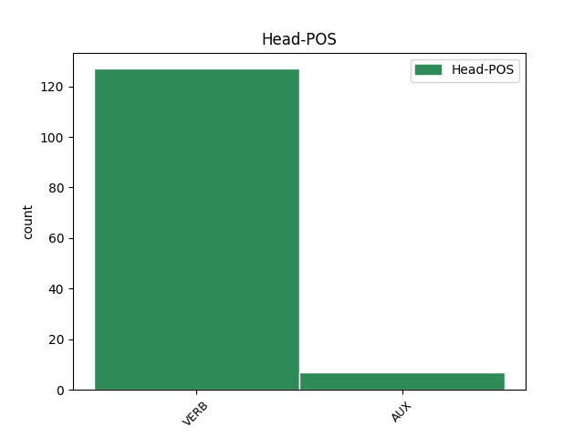
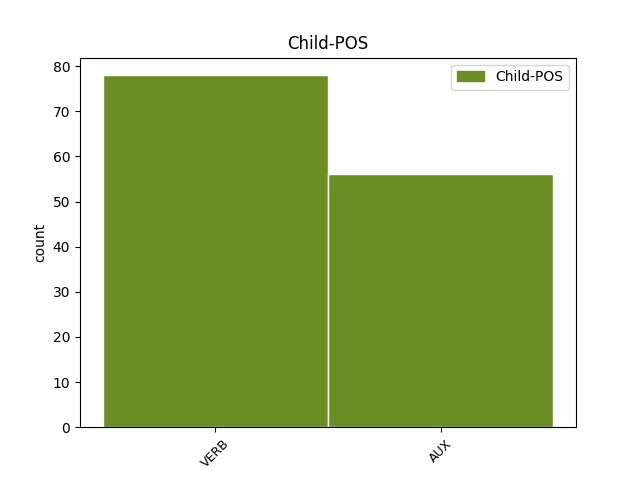

Distribution of features within this leaf



Agreement Rules sorted by frequency.
- When the dependent token is the conjunct(conj) of the head token,
1 पत्रिका _ _ _ _ 0 _ _ _
2 के _ _ _ _ 0 _ _ _
3 अनुसार _ _ _ _ 0 _ _ _
4 खान _ _ _ _ 0 _ _ _
5 की _ _ _ _ 0 _ _ _
6 इन _ _ _ _ 0 _ _ _
7 यात्राओं _ _ _ _ 0 _ _ _
8 का _ _ _ _ 0 _ _ _
9 उद्देश्य _ _ _ _ 0 _ _ _
10 अभी _ _ _ _ 0 _ _ _
11 तक _ _ _ _ 0 _ _ _
12 स्पष्ट _ _ _ _ 0 _ _ _
13 नहीं _ _ _ _ 0 _ _ _
14 है है VERB VM Mood=Ind|Number=Sing|Person=3|Tense=Pres|VerbForm=Fin|Voice=Act 0 _ _ _
15 , _ _ _ _ 0 _ _ _
16 लेकिन _ _ _ _ 0 _ _ _
17 खुफिया _ _ _ _ 0 _ _ _
18 अधिकारियों _ _ _ _ 0 _ _ _
19 का _ _ _ _ 0 _ _ _
20 मानना _ _ _ _ 0 _ _ _
21 है है VERB VM Mood=Ind|Number=Sing|Person=3|Tense=Pres|VerbForm=Fin|Voice=Act 14 conj _ ChunkId=VGF2|ChunkType=head|Stype=declarative|Tam=hE|Translit=hai|Vib=है
22 कि _ _ _ _ 0 _ _ _
23 सऊदी _ _ _ _ 0 _ _ _
24 अरब _ _ _ _ 0 _ _ _
25 और _ _ _ _ 0 _ _ _
26 मिस्र _ _ _ _ 0 _ _ _
27 परमाणु _ _ _ _ 0 _ _ _
28 तक़नीक _ _ _ _ 0 _ _ _
29 की _ _ _ _ 0 _ _ _
30 तलाश _ _ _ _ 0 _ _ _
31 में _ _ _ _ 0 _ _ _
32 हैं _ _ _ _ 0 _ _ _
33 और _ _ _ _ 0 _ _ _
34 कई _ _ _ _ 0 _ _ _
35 अफ्रीकी _ _ _ _ 0 _ _ _
36 देश _ _ _ _ 0 _ _ _
37 कच्चे _ _ _ _ 0 _ _ _
38 यूरेनियम _ _ _ _ 0 _ _ _
39 संपन्न _ _ _ _ 0 _ _ _
40 हैं _ _ _ _ 0 _ _ _
41 । _ _ _ _ 0 _ _ _
Disagree Examples:
1 मुख्य _ _ _ _ 0 _ _ _
2 न्यायाधीश _ _ _ _ 0 _ _ _
3 वाई. _ _ _ _ 0 _ _ _
4 के. _ _ _ _ 0 _ _ _
5 सब्बरवाल _ _ _ _ 0 _ _ _
6 , _ _ _ _ 0 _ _ _
7 जस्टिस _ _ _ _ 0 _ _ _
8 सी. _ _ _ _ 0 _ _ _
9 के. _ _ _ _ 0 _ _ _
10 ठक्कर _ _ _ _ 0 _ _ _
11 , _ _ _ _ 0 _ _ _
12 जस्टिस _ _ _ _ 0 _ _ _
13 आर. _ _ _ _ 0 _ _ _
14 वी. _ _ _ _ 0 _ _ _
15 रवींद्रन _ _ _ _ 0 _ _ _
16 और _ _ _ _ 0 _ _ _
17 जस्टिस _ _ _ _ 0 _ _ _
18 लोकेश्वर _ _ _ _ 0 _ _ _
19 सिंह _ _ _ _ 0 _ _ _
20 पांटा _ _ _ _ 0 _ _ _
21 की _ _ _ _ 0 _ _ _
22 खंडपीठ _ _ _ _ 0 _ _ _
23 ने _ _ _ _ 0 _ _ _
24 एक _ _ _ _ 0 _ _ _
25 स्वयंसेवी _ _ _ _ 0 _ _ _
26 संस्था _ _ _ _ 0 _ _ _
27 सोसाइटी _ _ _ _ 0 _ _ _
28 फॉर _ _ _ _ 0 _ _ _
29 सेफ _ _ _ _ 0 _ _ _
30 स्ट्रकचर _ _ _ _ 0 _ _ _
31 की _ _ _ _ 0 _ _ _
32 जनहित _ _ _ _ 0 _ _ _
33 याचिका _ _ _ _ 0 _ _ _
34 पर _ _ _ _ 0 _ _ _
35 विचार _ _ _ _ 0 _ _ _
36 करने _ _ _ _ 0 _ _ _
37 के _ _ _ _ 0 _ _ _
38 समय _ _ _ _ 0 _ _ _
39 केंद्र _ _ _ _ 0 _ _ _
40 सरकार _ _ _ _ 0 _ _ _
41 से _ _ _ _ 0 _ _ _
42 कहा _ _ _ _ 0 _ _ _
43 कि _ _ _ _ 0 _ _ _
44 दो _ _ _ _ 0 _ _ _
45 सप्ताह _ _ _ _ 0 _ _ _
46 में _ _ _ _ 0 _ _ _
47 विस्तृत _ _ _ _ 0 _ _ _
48 रिपोर्ट _ _ _ _ 0 _ _ _
49 शपथ _ _ _ _ 0 _ _ _
50 पर _ _ _ _ 0 _ _ _
51 पेश _ _ _ _ 0 _ _ _
52 करे कर VERB VM Mood=Sub|Number=Sing|Person=3|VerbForm=Fin|Voice=Act 0 _ _ _
53 और _ _ _ _ 0 _ _ _
54 चार _ _ _ _ 0 _ _ _
55 सप्ताह _ _ _ _ 0 _ _ _
56 बाद _ _ _ _ 0 _ _ _
57 याचिका _ _ _ _ 0 _ _ _
58 पर _ _ _ _ 0 _ _ _
59 सुनवाई _ _ _ _ 0 _ _ _
60 की _ _ _ _ 0 _ _ _
61 जाएगी जा AUX VAUX Gender=Fem|Mood=Ind|Number=Sing|Person=3|Tense=Fut|VerbForm=Fin 52 conj _ ChunkId=VGF3|ChunkType=child|Tam=gA|Translit=jāegī|Vib=गा
62 । _ _ _ _ 0 _ _ _